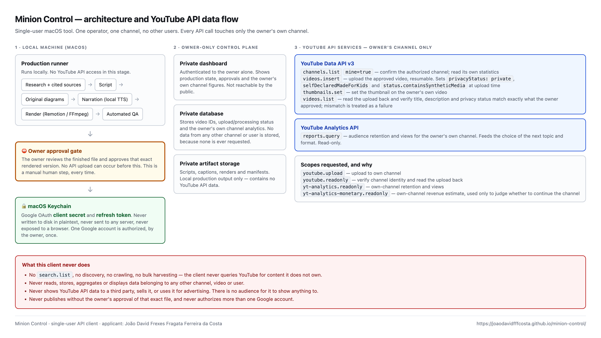

Minion Control
A single-user tool that produces and uploads videos to one YouTube channel — its owner's.
Minion Control is a personal macOS application written and operated by João David Frexes
Fragata Ferreira da Costa. It has no other users. It is not distributed, sold, or offered as
a service, and there is no sign-up.
It drafts a script from cited sources, generates original diagrams and narration, renders
the video locally, and — only after the owner approves that exact rendered file — uploads it
to the owner's own YouTube channel. It then reads that channel's own analytics to decide what
to produce next.
How it uses YouTube API Services
Every call below acts on the owner's own channel. The application is authorized to exactly
one Google account.
channels.list (mine=true) — confirm the authorized channel and read its own statisticsvideos.insert — upload the owner's approved videovideos.list — read the upload back and verify its metadata matches what was approvedthumbnails.set — set the thumbnail on the owner's own video- YouTube Analytics
reports.query — retention and views for the owner's own channel
It does not call search.list. It does not read, store, aggregate or display
data belonging to any other channel, video or user, and it shows YouTube data to nobody.
Architecture
The full data flow, every endpoint and every OAuth scope:
architecture-diagram.png

Synthetic media disclosure
Narration and imagery are AI-generated. Every upload sets
status.containsSyntheticMedia on the videos.insert call, so YouTube's
altered-content disclosure is applied at upload time rather than added afterwards.
selfDeclaredMadeForKids is set explicitly on every upload. The channel is
English-language, general audience, and is not made for kids.